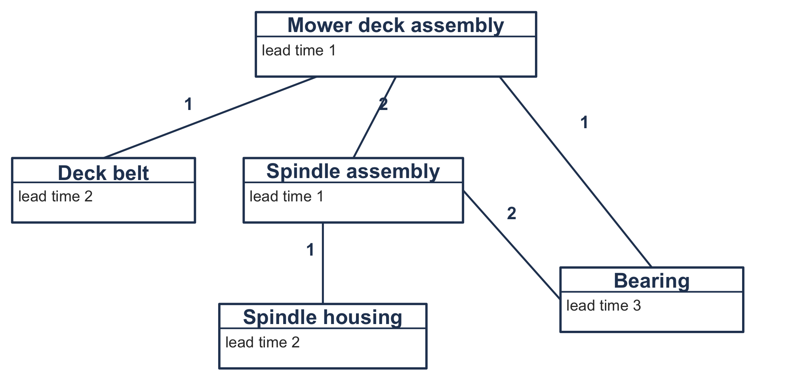
6 Material and Distribution Requirements Planning
NoteLearning objectives
After reading this chapter you should be able to:
- distinguish dependent from independent demand, and explain why dependent demand should be calculated and not forecast
- read a bill of material, assign low-level codes, and say why an item must be planned at its deepest occurrence
- complete an MRP record: netting, lot sizing, and lead-time offsetting
- explode a master production schedule through a product structure, level by level
- say how long a planning horizon has to be before it can produce a plan at all
- explain how a parent’s lot sizing rule reshapes the demand its components see, and why minimizing cost level by level does not minimize cost
- apply the same time-phased logic to a distribution network
- recognize how lot sizing, lead times, and schedule changes produce nervousness
- state what requirements planning assumes, and which of those assumptions the rest of this book removes
Chapter 3 decided one order quantity at a constant demand rate. Chapter 5 let the rate vary and planned one item over a horizon whose requirements were given. This chapter is about where those requirements come from.
For most of the items in a manufacturing business they are not forecast at all. They are calculated, from the schedule for whatever is built out of them. In this chapter we do that calculation for every item at every level of a product structure, which is material requirements planning, and doing it across a network of stocking locations is distribution requirements planning. The two are the same arithmetic, and this chapter says so more than once.
6.1 Demand You Should Not Forecast
An item’s demand is independent when it arises outside the firm and dependent when it arises from the firm’s own plans. A distributor selling mower deck belts over the counter faces independent demand for them. The manufacturer who puts one belt into every deck it builds does not: the demand for belts is whatever the deck schedule says it is.
The distinction is not about the item. It is about the position. The same belt is independent demand at the distributor and dependent demand at the manufacturer, and the right way to plan it differs accordingly.
6.1.1 Why Forecasting It Is a Mistake
Suppose we forecast belt demand from belt history, as Chapter 5’s distributor would. Two things go wrong.
The first is that the forecast throws away information. The manufacturer knows the deck schedule. Every belt it will need for the next year is implied by a document it wrote itself. Replacing that with an extrapolation from past belt usage replaces a known quantity with an estimate of it, and the estimate can only be worse. That is, the forecast is not merely unnecessary; it is a way of making the answer less certain than it already was.
The second is worse and less obvious. Dependent demand is lumpy. A deck assembly built in lots of 300 consumes belts in lots of 300, so the belt sees nothing for several periods and then 300 at once. A forecast fitted to that history produces an average, and an average is the one value the demand never takes. For example, the belt requirement in Table 6.5 is 420 in one month and nothing in the next, and its mean of 153 occurs in no month at all. Section 6.5 measures the lumpiness and shows where it comes from. That is not the item and not the customer but the lot sizing rule one level up.
Recall that Section 5.6.1 gave a test for when a pattern varies enough to need the methods of Chapter 5. Dependent demand almost always passes it, and it passes it for a reason that is manufactured and not observed.
6.1.2 Where This Chapter Sits
Chapter 5 planned one item, and this chapter plans an item for every node of a product structure. What it hands each of them is the requirements schedule of Section 5.1.1, and what it does with the answer is pass it down to the level below. The lot sizing of Section 5.5 is used here unchanged and is not restated.
The stochastic chapters that follow remove the assumption that any of this is known. 2 collects what requirements planning takes for granted, and it is the bridge to them.
6.2 The Bill of Material
A bill of material records what goes into what, and how many. Figure 6.1 illustrates the manufacturer’s mower deck assembly.
The same information is often written as an indented list, easier to type and harder to read:
Mower deck assembly (DA), lead time 1
Deck belt (B), 1 each, lead time 2
Spindle assembly (S), 2 each, lead time 1
Spindle housing (H), 1 each, lead time 2
Bearing (BR), 2 each, lead time 3
Bearing (BR), 1 each, lead time 3Each indentation is a level. The deck assembly is level 0, the belt and the spindle assembly are level 1, and the housing is level 2. The number in parentheses is the quantity per: one deck assembly takes two spindle assemblies, and each of those takes two bearings.
Notice that the bearing appears twice. An idler bearing is fitted directly to the deck and two more sit inside each spindle assembly. That is the usual case, not an awkward one, and it is the reason for the next idea.
6.2.1 Low-Level Codes
An item must be planned once, and it must be planned after every parent that consumes it. The bearing appears at level 1 and again at level 2. If it were planned at level 1, its requirements would be netted against the stock on hand before the spindle assembly had asked for any, and the spindle assembly would then find the stock already spoken for.
Thus, each item carries a low-level code: the deepest level at which it appears anywhere in the structure. The bearing’s is 2. Table 6.1 collects them.
| Item | Appears at level | Low-level code |
|---|---|---|
| Mower deck assembly, DA | 0 | 0 |
| Deck belt, B | 1 | 1 |
| Spindle assembly, S | 1 | 1 |
| Spindle housing, H | 2 | 2 |
| Bearing, BR | 1 and 2 | 2 |
Thus, planning in low-level-code order, shallowest first, guarantees that every parent of an item has a plan before the item does. For this structure the order is DA, then B and S, then BR and H.
6.2.2 The Explosion Calculation
Before any record, we need the arithmetic that connects two levels. Let item \(i\) be a parent of item \(j\), and \(q_{ij}\) of \(j\) go into one \(i\), then the requirement \(j\) inherits in period \(t\) is \[ G_{jt} = \sum_{i \in \text{parents}(j)} q_{ij} \, \mathit{Rel}_{it} , \tag{6.1}\] where \(\mathit{Rel}_{it}\) is the quantity of \(i\) that the plan releases in period \(t\).
Releases, and not receipts. A parent needs its components in hand when it starts building, and the release is when it starts. Using the receipt row would ask for the components on the day the parent is finished, a whole lead time too late. This is the single most common error in a hand-worked explosion.
For the bearing, Equation 6.1 has two terms, because it has two parents: \[ G_{\mathit{BR},t} = 1 \cdot \mathit{Rel}_{\mathit{DA},t} + 2 \cdot \mathit{Rel}_{S,t} . \] The two arrive in different periods, because the two paths through the structure have different lead times.
6.3 The MRP Record
We give every item a record: six rows over a common horizon of periods. The periods run across the columns. That is how a requirements record is laid out everywhere it is used, and the reverse of Chapter 5’s worksheets. Nothing in the arithmetic depends on it.
Let \(G_t\) represent the gross requirement in period \(t\), \(\mathit{SR}_t\) the scheduled receipt, \(I_t\) the projected on hand at the end of period \(t\), \(\mathit{NR}_t\) the net requirement, \(\mathit{POR}_t\) the planned order receipt, and \(\mathit{Rel}_t\) the planned order release. Let \(L\) be the lead time and \(\mathit{SS}\) the safety stock.
Gross requirements are what is needed. For an end item they come from the master production schedule. For everything else they come from Equation 6.1.
Scheduled receipts are what is already on order. These are commitments made in some earlier planning cycle, and they arrive whether or not this plan wants them.
Projected on hand is what is left at the end of a period: \[ I_t = I_{t-1} + \mathit{SR}_t + \mathit{POR}_t - G_t . \tag{6.2}\] That is Equation 5.1 with the scheduled receipts added, and it is an end-of-period figure for the same reason: Section 5.1.2 charges carrying on what crosses a period boundary.
Net requirements are what is short once the opening stock and the scheduled receipts have been counted: \[ \mathit{NR}_t = \max\left(G_t + \mathit{SS} - \mathit{SR}_t - I_{t-1},\; 0\right) . \tag{6.3}\]
Planned order receipts are what the lot sizing rule decides should arrive. Under lot-for-lot, \(\mathit{POR}_t = \mathit{NR}_t\). Under anything else it is larger and less frequent, and Section 6.5 is about what that costs.
Planned order releases are the receipts moved back by the lead time: \[ \mathit{Rel}_{t-L} = \mathit{POR}_t . \tag{6.4}\] This row is the record’s output. That is, it is what Equation 6.1 reads at the next level down, and it is the only row that says anything the planner will act on.
6.3.1 The Maximum Is the Whole Idea
Equation 6.3 has a \(\max\) in it, and a reader meeting the record for the first time usually leaves it out. Let’s see what happens.
Example 6.1 (A record without netting) Let’s take the deck assembly’s master schedule and carry the on-hand balance forward without netting anything, so that Equation 6.2 runs with \(\mathit{POR}_t = 0\) throughout.
| Period | 6 | 7 | 8 | 9 | 10 | 11 | 12 | 13 | 14 | 15 | 16 | 17 |
|---|---|---|---|---|---|---|---|---|---|---|---|---|
| Gross requirements | 40 | 60 | 120 | 300 | 420 | 260 | 120 | 40 | 0 | 80 | 180 | 220 |
| Projected on hand | -40 | -100 | -220 | -520 | -940 | -1,200 | -1,320 | -1,360 | -1,360 | -1,440 | -1,620 | -1,840 |
The balance reaches \(-1,840\), the whole year’s requirement. That is correct arithmetic and a useless plan: it reports that if nothing is ordered then everything is short, which the reader knew.
Netting turns each of those shortages into an order. Because this item starts with nothing on hand and nothing on order, Equation 6.3 gives \(\mathit{NR}_t = G_t\) in every period, lot-for-lot has \(\mathit{POR}_t = \mathit{NR}_t\), and Equation 6.2 then holds \(I_t\) at zero throughout. The \(\max\) is what stops the shortage propagating into the next period instead of being planned for.
6.3.2 Safety Stock and Allocations
We meet two modifications to Equation 6.3 constantly, and neither needs new machinery.
Safety stock is the \(\mathit{SS}\) term. It raises every net requirement by the same amount, which has the effect of holding \(\mathit{SS}\) units permanently and planning around what is left. Whether it belongs in a system whose entire premise is that demand is known is a real question, and the field has never fully settled it. 2 returns to it.
Allocated stock is inventory that is physically present but already promised to something else. It is handled by reducing \(I_0\), the opening balance, in order to keep the stock that is promised elsewhere out of the calculation. Nothing else changes.
6.3.3 How Long the Horizon Has to Be
A record cannot release an order before period 1, and we have to allow for that. If a receipt is due in period \(t\) and the lead time is \(L\), then the release falls in period \(t - L\), and when that is less than 1 the order is past due: the plan has discovered a requirement it no longer has time to meet.
Past-due orders at the bottom of a structure are usually not a data problem. That is, they are a horizon problem. The lead times accumulate down every path, and the horizon must lead the first requirement by the longest of those accumulations.
For the deck assembly the deepest path runs assembly, spindle assembly, bearing, with lead times 1, 1 and 3, so the cumulative lead time is 5 months. Table 6.3 shows what happens on either side of that.
| Empty months in front of the schedule | 3 | 4 | 5 | 6 |
|---|---|---|---|---|
| Units the plan cannot release in time | 520 | 160 | 0 | 0 |
Thus, the horizon used throughout this chapter is 17 months: five empty months and then the twelve-month schedule.
6.4 Running the Explosion
With the record defined and the order of the items settled, we produce the plan by doing one and then the other, level by level.
plan(bill of material, master production schedule):
assign every item its low-level code
sort the items by low-level code, shallowest first
for each item in that order:
if a master schedule speaks about this item:
G <- the master schedule
else:
G(t) <- sum over parents i of q(i, item) * Rel(i, t)
// the record of section 6.3
NR(t) <- max(G(t) + SS - SR(t) - I(t-1), 0)
POR <- the lot sizing rule applied to NR
I(t) <- I(t-1) + SR(t) + POR(t) - G(t)
Rel(t - L) <- POR(t)
return every item's recordExample 6.2 (The deck assembly, all five items) We plan every item lot-for-lot, with nothing on hand and nothing on order. The master schedule carries the twelve-month pattern in months 6 through 17.
The deck assembly nets to its own schedule, and Table 6.4 reads its releases off as that schedule pulled back one month.
| Period | 5 | 6 | 7 | 8 | 9 | 10 | 11 | 12 | 13 | 14 | 15 | 16 | 17 |
|---|---|---|---|---|---|---|---|---|---|---|---|---|---|
| DA gross requirements | 0 | 40 | 60 | 120 | 300 | 420 | 260 | 120 | 40 | 0 | 80 | 180 | 220 |
| DA planned order releases | 40 | 60 | 120 | 300 | 420 | 260 | 120 | 40 | 0 | 80 | 180 | 220 | 0 |
Now we apply Equation 6.1. The belt takes one per deck, so its gross requirements are the deck assembly’s releases unchanged, and its own lead time of two months pulls them back again. The spindle assembly takes two per deck, so its gross requirements are twice that row.
| Period | 3 | 4 | 5 | 6 | 7 | 8 | 9 | 10 | 11 | 12 | 13 | 14 | 15 | 16 |
|---|---|---|---|---|---|---|---|---|---|---|---|---|---|---|
| B gross requirements | 0 | 0 | 40 | 60 | 120 | 300 | 420 | 260 | 120 | 40 | 0 | 80 | 180 | 220 |
| B planned order releases | 40 | 60 | 120 | 300 | 420 | 260 | 120 | 40 | 0 | 80 | 180 | 220 | 0 | 0 |
| S gross requirements | 0 | 0 | 80 | 120 | 240 | 600 | 840 | 520 | 240 | 80 | 0 | 160 | 360 | 440 |
| S planned order releases | 0 | 80 | 120 | 240 | 600 | 840 | 520 | 240 | 80 | 0 | 160 | 360 | 440 | 0 |
The bearing is the interesting one, because Equation 6.1 has two terms for it. One bearing per deck assembly and two per spindle assembly, and Table 6.6 keeps the two apart before adding them, because the two parents release in different periods.
| Period | 4 | 5 | 6 | 7 | 8 | 9 | 10 | 11 | 12 | 13 | 14 | 15 | 16 |
|---|---|---|---|---|---|---|---|---|---|---|---|---|---|
| One per deck assembly | 0 | 40 | 60 | 120 | 300 | 420 | 260 | 120 | 40 | 0 | 80 | 180 | 220 |
| Two per spindle assembly | 160 | 240 | 480 | 1,200 | 1,680 | 1,040 | 480 | 160 | 0 | 320 | 720 | 880 | 0 |
| BR gross requirements | 160 | 280 | 540 | 1,320 | 1,980 | 1,460 | 740 | 280 | 40 | 320 | 800 | 1,060 | 220 |
Notice the shape of the last row. It is not the shape of the master schedule, and it is not the shape of either contribution taken alone. Two streams arriving on different offsets add up to a pattern that looks nothing like the demand that caused it, and nobody forecast any of it.
Lot-for-lot throughout costs $14,500, every dollar of it setup, because no item ever carries anything from one period to the next. That is the plan the next section improves on, and the way it improves on it is not the obvious one.
6.5 What Lot Sizing Does to the Level Below
Example 6.2 ordered lot-for-lot at every level. Thus, it is the plan an MRP system produces when nobody has told it otherwise. Every rule of Section 5.5 can be used instead, applied to the net requirement row of whichever record it is planning. None of them is restated here. What this section is about is something Chapter 5 could not see, because Chapter 5 had only one item.
A parent’s lot sizing rule does not only decide what the parent costs. By Equation 6.1 it decides when and in what sizes the components are asked for, and so it decides what their problem looks like before they have made any choice at all.
6.5.1 One Rule Changes, and Everything Moves
We hold every component at lot-for-lot and change only the rule used on the deck assembly. Nothing below level 0 decides anything, so whatever we see move is the end item’s doing.
| Rule on the deck assembly | Orders | \(VC\) at level 1 | Cost at DA | Cost below | Total |
|---|---|---|---|---|---|
| Lot-for-lot | 11 | 0.6191 | $5,500 | $9,000 | $14,500 |
| Periodic order quantity | 11 | 0.6191 | $5,500 | $9,000 | $14,500 |
| Wagner-Whitin | 9 | 0.6701 | $4,860 | $7,500 | $12,360 |
| Silver-Meal | 8 | 0.9650 | $4,936 | $6,700 | $11,636 |
| Least unit cost | 7 | 1.0274 | $5,588 | $6,100 | $11,688 |
| Part-period balancing | 7 | 1.5463 | $5,444 | $6,100 | $11,544 |
| Adjusted economic order quantity | 7 | 0.8459 | $5,588 | $5,900 | $11,488 |
We draw three things out of that table.
Lot-for-lot is the only rule that changes nothing. Its receipts are the master schedule itself, so the components see the schedule, and \(VC = 0.6191\) is the schedule’s own figure. Every rule that batches raises it, as far as 1.5463 under part-period balancing. The periodic order quantity happens to agree with lot-for-lot here, because the deck assembly’s holding rate is high enough that Equation 3.17 gives a time supply of 1.35 months, which rounds to one.
The cost below a level rises with how often the level above orders. Read the Orders column against the Cost below column and the relation is exact: seven orders cost between $5,900 and $6,100 below, eight cost $6,700, nine cost $7,500, and eleven cost $9,000. The reason is Equation 6.1 and nothing else. Every release a parent makes is a requirement its components have to meet, and meeting a requirement costs a setup. For example, lot-for-lot releases eleven times and the components below it place their own orders eleven times each.
Thus, the rule that is best at a level is not the rule that is best for the product. Wagner-Whitin is optimal at the deck assembly, and it is optimal there by construction, since Section 5.4.2 proves no rule can beat it on that item’s own requirements. It costs $4,860 where the adjusted economic order quantity costs $5,588, and it is $872 worse over the structure as a whole. Choosing the rule by the level you can see costs 7.59% here.
6.5.2 What the Variability Coefficient Does Not Tell You
You will be tempted to read the \(VC\) column as a cost. It is not one. Part-period balancing produces much the lumpiest pattern in Table 6.7 and is not the most expensive plan; Wagner-Whitin produces nearly the smoothest and is the second most expensive. Notice that the order count explains the cost below and the variability coefficient does not.
The variability coefficient is still the right thing to look at when you are asking whether a component’s own planner needs the methods of Chapter 5. Section 5.6.1 set the threshold at 0.2, and every row of Table 6.7 clears it comfortably. That is the point made in Section 6.1.1, now with a number attached: dependent demand does not merely happen to be variable, it is made variable, by a decision taken one level up.
6.5.3 What Is Actually Done
Most installed systems run lot-for-lot below the top level or two, and reading Table 6.7 it is easy to see that as laziness. It is not, quite.
Lot-for-lot at a component is the rule that leaves the level beneath it alone, and in a structure several levels deep that matters more at each level down. Thus, it also produces the smallest projected balances, and that is what a planner wants when the requirements above are going to be revised anyway, and Section 6.7 is about how often that happens. And it needs no cost parameters, which matters because a bill of material with ten thousand items has ten thousand order costs that nobody has ever measured.
The defensible position is that batching pays where the setup is large and genuinely known, usually the end item and the major subassemblies, and that below that the information needed to do it well does not exist.
6.6 Distribution Requirements Planning
The same arithmetic plans a distribution network. Let’s be precise about how little has to change.
Chapter 5’s distributor does not build anything. It holds belts at three regional warehouses, each serving its own dealers, and replenishes all three from a central warehouse. Figure 6.2 illustrates the network.
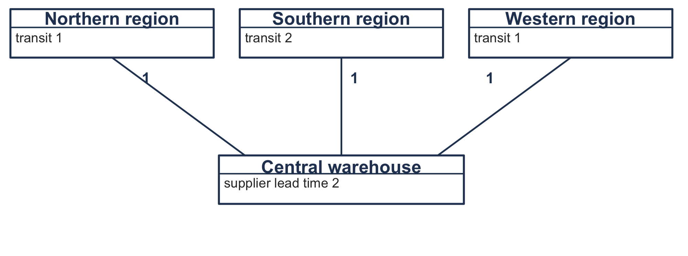
A regional warehouse’s demand is independent: dealers buy what they buy. The central warehouse’s demand is not. It is whatever the three regions order, a consequence of their own plans, exactly as a component’s demand is a consequence of its parent’s. Thus, the central warehouse is planned the same way a component is.
6.6.1 It Is the Same Calculation
Let’s write Equation 6.1 for the central warehouse. Its parents are the three regions, and the quantity per is one belt per belt: \[ G_{\mathit{CW},t} = \sum_{r \in \text{regions}} 1 \cdot \mathit{Rel}_{rt} . \] That is Equation 6.1 with every \(q_{ij} = 1\). Transit time plays the part of lead time, the regions are the level-0 items, the warehouse is their component, and Algorithm 6.1 runs unchanged. That is, nothing in the algorithm has to know which kind of graph it is walking. The software of Section 6.10 uses one class for both, and Section 6.10.6 explains why that is not a trick.
Two differences are real and neither is arithmetic.
A bill of material has a quantity per and a distribution network does not, or rather has one everywhere. A parent needs two spindle assemblies per deck; a region needs one belt per belt.
And the direction of the relationship reads backwards. In a bill of material the parent is what the child goes into. In a network the parent is the customer and the child is the supplier. The arrow points the way the requirement travels, upstream in both cases, and that is why the same code carries them.
Example 6.3 (The three regions and the centre) The three regions sell 1,840 belts between them over the twelve months, split 830 to the north, 640 to the south and 370 to the west. Transit is one month to the north and west and two to the south, and the central warehouse’s own supplier takes two months. The cumulative lead time is therefore four months, so the horizon leads the first sale by four.
Every location orders lot-for-lot. In Table 6.8 the regions’ releases are their own sales pulled back by their transit times, and the centre’s gross requirements are the sum of the three.
| Period | 3 | 4 | 5 | 6 | 7 | 8 | 9 | 10 | 11 | 12 | 13 | 14 | 15 |
|---|---|---|---|---|---|---|---|---|---|---|---|---|---|
| North releases | 0 | 20 | 30 | 60 | 140 | 180 | 110 | 50 | 20 | 0 | 40 | 80 | 100 |
| South releases | 10 | 20 | 40 | 100 | 160 | 100 | 50 | 10 | 0 | 20 | 60 | 70 | 0 |
| West releases | 0 | 10 | 10 | 20 | 60 | 80 | 50 | 20 | 10 | 0 | 20 | 40 | 50 |
| Centre’s gross requirements | 10 | 50 | 80 | 180 | 360 | 360 | 210 | 80 | 30 | 20 | 120 | 190 | 150 |
Notice that the south is a month out of step with the other two, because its transit time is longer. The centre’s requirement in period 3 is the south’s alone.
6.6.2 What the Regions Do to the Centre
Section 6.5’s result has a counterpart here, and it is the more famous of the two. We change the rule the regions use and watch what the centre sees.
| Rule at every region | \(VC\) at the centre | Regions | Centre | Total |
|---|---|---|---|---|
| Lot-for-lot | 0.6013 | $6,600 | $5,200 | $11,800 |
| Part-period balancing | 1.1588 | $3,860 | $3,200 | $7,060 |
| Wagner-Whitin | 1.4234 | $3,830 | $3,200 | $7,030 |
| Silver-Meal | 1.5706 | $3,980 | $3,600 | $7,580 |
| Periodic order quantity | 1.9584 | $4,310 | $3,200 | $7,510 |
The demand the centre faces is between two and three times as variable as the demand the regions actually sell, and the regions’ customers did nothing to cause it. This is the bullwhip effect, and Table 6.9 is its mechanism in one table: batching at one stage is amplification at the next.
Notice two things before we let the conclusion run away.
Under lot-for-lot the centre sees \(VC = 0.6013\), slightly less variable than the 0.6191 the regions sell. Three locations ordering on different transit times are slightly out of step with one another, and the staggering smooths what the centre sees. Amplification is caused by batching and not by the network.
And every batching row in Table 6.9 is cheaper than lot-for-lot, at the regions and at the centre both. In a world where demand is known, amplification costs nothing: the centre can see the lumpy pattern coming and plan for it, as it just did. The bullwhip effect is expensive when demand is uncertain, because then the centre cannot tell an amplified pattern from a change in the market and must hold stock against both. Chapter 10 takes that up, and it is the reason this chapter can report the amplification without reporting a cost for it.
6.7 Nervousness
Section 5.7.3 met nervousness with one item: the horizon rolls, the plan is recomputed, and the new plan disagrees with the old about orders not yet placed. In a product structure the disagreement propagates, and the propagation is the problem.
For example, a change to the master schedule in a distant period changes the deck assembly’s releases. Those are the belt’s requirements, so the belt replans. The belt’s releases move, and with a two-month lead time they move into periods nearer than the change that caused them. Two levels down, a revision to a requirement eleven months out can move an order that was going to be placed next week.
Three things make it worse than the single-item case of Section 5.7.3.
Lot sizing amplifies it. A batching rule has thresholds, and a small change in requirements moves a plan across one. Section 5.7.3 measured the first-period commitment for two rules and found that Silver-Meal held steady while Wagner-Whitin did not. Here that instability is multiplied by every level beneath.
Lead times concentrate it. A change far out in the schedule arrives at the bottom of the structure much sooner, because each level’s lead time pulls it earlier.
Low-level codes spread it. An item with several parents is replanned when any of them moves.
We have the devices of Section 5.7.3, with one addition. A firm planned order is a planned order the system is forbidden to move. It is the freeze fence applied to a single order instead of to a span of periods, and it is how a planner overrides the calculation without turning it off. A time fence does the same for a span. A change penalty is rare here for the reason Section 5.7.3 gave, and rarer still because it would have to be defined for every item at every level.
Safety lead time is the device this chapter adds. Instead of holding extra stock, the item is planned to arrive a period early. It buffers against a late delivery in a way that safety stock does not, and it costs a period of carrying on everything instead of a permanent balance on one item. Which you should use depends on whether the uncertainty is in the quantity or in the timing, and requirements planning gives you no way to tell.
6.8 What Requirements Planning Assumes
The arithmetic of this chapter is exact, and every assumption we made to get it is questionable. We collect them here, and they are the bridge to the rest of the book.
- Capacity is infinite. Nothing in Algorithm 6.1 asks whether the shop can build 1,980 bearings in period 8. Thus, a plan that cannot be executed is not a plan, and capacity requirements planning takes the releases and compares them with what the work centres can do. When it finds a conflict the master schedule is changed and the explosion is run again. That loop, with capacity and the financial side attached, is what manufacturing resource planning means. It is outside this book, which takes up inventory and not scheduling.
- Lead times are fixed and known. They are treated as properties of an item. In a real shop a lead time is mostly queueing, so it depends on how loaded the shop is, which depends on the lot sizes, which are what the plan is choosing. Planning with a fixed lead time and then releasing work that makes the true lead time longer is a well-documented way to make a plan worse by following it.
- Requirements are known. The master production schedule is a forecast for the end items, and everything below it inherits that forecast’s error with the amplification of Section 6.5 applied.
- The records are right. Section 2.3 showed what record accuracy actually is in the field. An explosion nets against on-hand balances. Thus, an error in one balance becomes a wrong order for every item beneath it. Requirements planning is less tolerant of bad records than an order-point system, because it computes rather than reacts.
- Everything is deterministic. No demand distribution appears anywhere in this chapter, and the only concession to uncertainty is a safety stock that Section 6.3.2 could not justify from inside the model.
Assumption 5 is the one the rest of this book removes. Chapter 7 begins with a single period and a random demand, and Chapter 8 through Chapter 10 build the machinery that assumption 3 and assumption 5 need.
6.9 Building These Models in a Worksheet
The workbook is Chapter6Models.xlsx. It has four working sheets, and one thing about it will look wrong to a reader coming from Section 5.8: the periods run across the columns and not down the rows.
That is deliberate and it is not this book’s choice. A requirements record is laid out with periods across the columns everywhere it is used, because a planner reads one item’s six rows at a time and compares them with each other. Chapter 5 ran the periods downward because there the thing that grows is the horizon and every calculation was indexed by it. Here the thing that repeats is the item. The layout follows the field.
6.9.1 The Record, Computed Twice
The Record sheet computes the same gross requirements twice. The upper block carries the balance forward without netting and produces Table 6.2; the lower block nets and produces a plan. The two blocks differ in one formula, and putting them one above the other is the point of the sheet.
Below them, three cells: the lowest balance each block reaches, and the units the lead time pushed off the front of the horizon. Notice what that last one measures. It is the difference between what the plan wants to receive and what it managed to release, and it is zero only when the horizon is long enough. Figure 6.3 is the sheet.
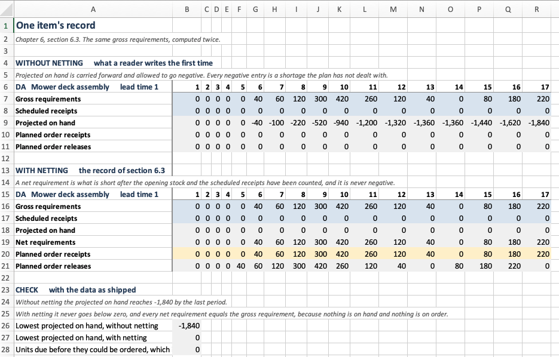
Record sheet. The upper block has no net requirement row at all, because a reader writing a record for the first time has not met netting; what it has instead is a projected-on-hand row running to \(-1,840\). The lower block nets, and its projected-on-hand row never leaves zero. Notice that the two blocks share a gross requirement row to the unit, so the only thing that differs between them is the arithmetic.
6.9.2 The Explosion
The Explosion sheet holds the structure in three columns at the top and then one record per item, in low-level-code order. A component’s gross requirement row is Equation 6.1 written out: a sum of terms, one per parent, each a quantity per times a release.
The quantities in the structure block are the cells those formulas read. Type a 3 over the 2 and every record below the spindle assembly moves. A workbook that showed the structure as a decoration while the formulas carried the numbers would be worse than one that did not show it at all, because it would look as though it worked. Figure 6.4 is the top of the sheet and Figure 6.5 the rest.
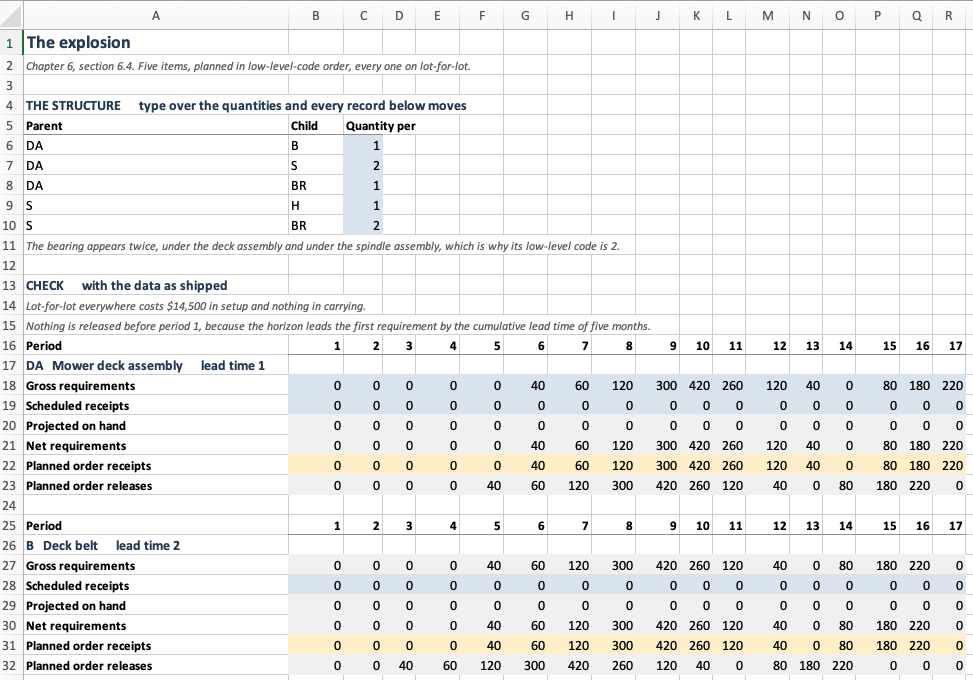
Explosion sheet: the structure, the check block, and the first two records. The five blue cells in column C are the quantities per, and they are the only typed numbers on the sheet. Notice the deck belt’s gross requirement row against the deck assembly’s release row above it. They are the same numbers, because Equation 6.1 multiplies by a quantity per of one.
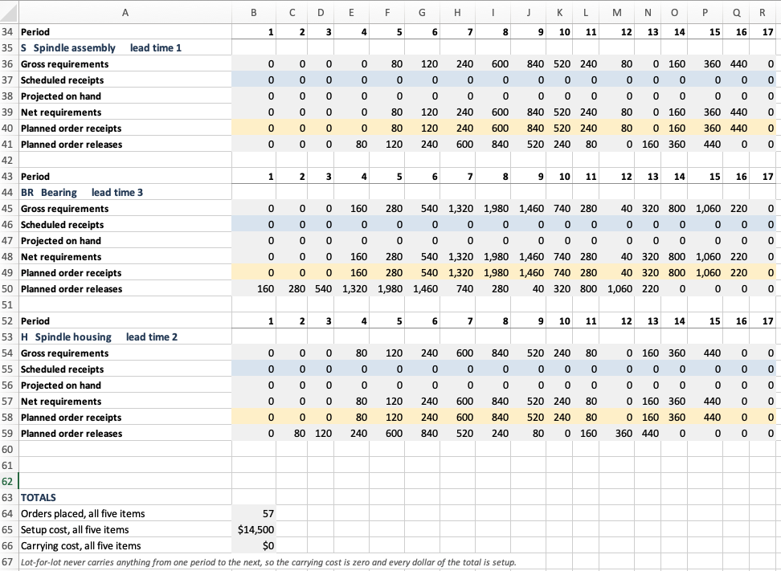
Explosion sheet: the spindle assembly, the bearing, the housing, and the totals. The bearing’s gross requirements are the largest numbers on the sheet, reaching 1,980 in period 8, although no deck assembly is ever built in a quantity approaching that. Five bearings per deck and two paths through the structure will do that. The three cells at the foot are the check block’s claim made computable: 57 orders, $14,500 of setup, and nothing carried.
6.9.3 The Lumpiness Sheet
Lumpiness illustrates Table 6.7 with the arithmetic exposed. Each row is what one rule has the deck assembly receive, and the columns to the right count the orders and compute the variability coefficient over the twelve scheduled months.
The variability coefficient is written as the mean of the squares less the square of the mean, over the square of the mean. The more obvious SUMPRODUCT((range - mean)^2) computes the same number and is an array expression, which a reader cannot follow by clicking on it.
The rows are blue, so a reader can type a pattern of their own. Anything that sums to 1,840 and covers the schedule is a plan, and the sheet will price the consequences. Figure 6.6 is Table 6.7 as a reader meets it.
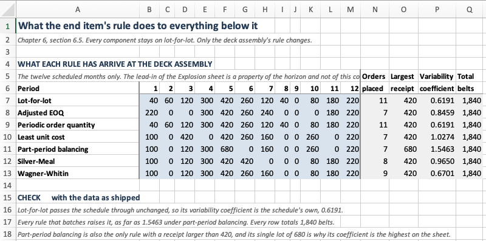
Lumpiness sheet. Seven rules, twelve months, and four columns of summary. The lead-in of the Explosion sheet is left out, because it is a property of the horizon and not of this comparison. Notice the Largest receipt column: six of the seven rules never exceed 420, and part-period balancing’s single lot of 680 is why its variability coefficient is the highest on the sheet. Notice also the Total column, which reads 1,840 on every row and is there to be checked.
6.9.4 The Network
DRP is the Explosion sheet with three level-0 locations instead of one and every quantity per equal to one. It is a separate sheet instead of a note on the first, because seeing the two side by side is what makes Section 6.6.1 believable. Figure 6.7 and Figure 6.8 are that sheet.
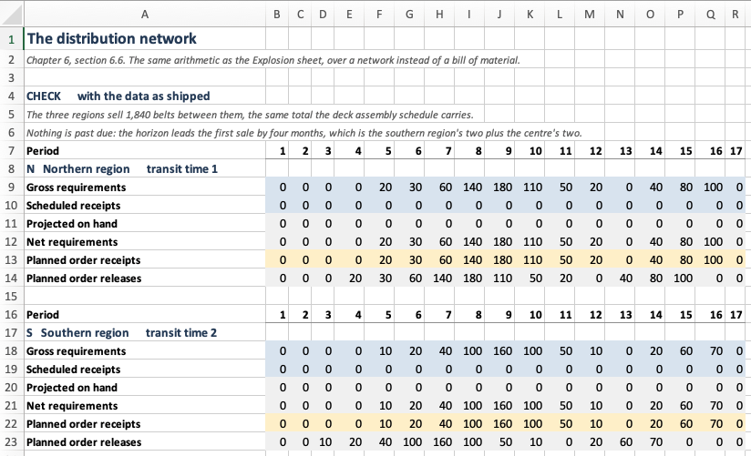
DRP sheet. Each is planned exactly as an end item is planned on the Explosion sheet, and the only word that changes is the one naming the offset: a region waits a transit time where an assembly waits a lead time. Notice that the southern region’s releases start a period earlier than the northern region’s, although both regions’ sales begin in the same month, because its transit time is a month longer.
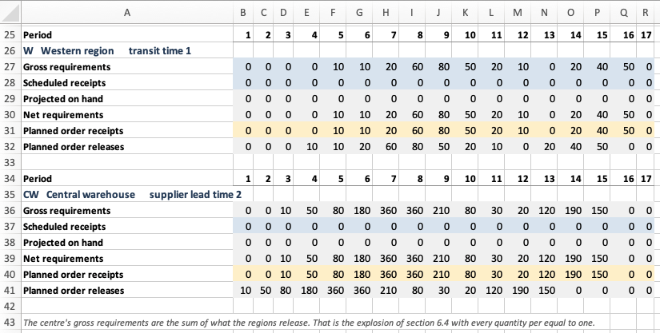
6.10 Designing the Software
Section 6.9 built the models as worksheets, and a worksheet shows its own structure. A program does not, so the structure has to be decided and written down. In Section 5.9 we did this for Chapter 5 and found that three heuristics were one procedure. This chapter’s design has a different shape, because most of what it needs already exists.
6.10.1 What the Software Must Do
- Hold a product structure, with quantities per, and assign low-level codes.
- Hold what the planner knows about an item that is not its requirements.
- Compute one item’s record: net, lot size, offset.
- Explode a master production schedule through the structure, in the right order.
- Do the same over a distribution network.
- Report what a plan costs, by item and in total.
Requirement 5 is the one to watch. It looks like a second feature and Section 6.10.6 argues that it is not one.
6.10.2 Finding the Nouns
A planned item is what the item master holds: lead time, opening stock, what is on order, the costs, and the rule. Not its requirements, because for every item but an end item those are computed and change whenever the level above is replanned.
A bill of material is the structure. It owns the low-level codes, which are a property of the graph and not of any item in it. An item cannot answer “what is my low-level code” without seeing every path that reaches it, so the question belongs to the thing that holds the paths.
An MRP record is one item’s six rows over a horizon.
A requirements plan is every item’s record, and the order they were computed in.
A receipt policy is how much to have arrive, given what must arrive.
Level is the instructive rejection. It reads like a class and the chapter uses the word constantly. It fails because a level has no behaviour: it is an integer attached to an item, and the only thing anyone does with it is sort by it.
Figure 6.9 illustrates the five and how they stand to one another. Notice that the bill of material holds the low-level codes and the planned item does not.
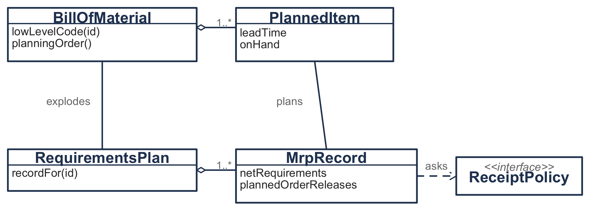
6.10.3 The Join with Chapter 5
The design turns on one sentence: the net requirement stream is a Section 5.1.1 requirements schedule. Once that is said, none of Section 5.5 needs an MRP version.
/**
* The net requirements of this item, as a Chapter 5 requirements schedule.
*
* This is the join between the two chapters and it is worth naming. Section 5.1
* took a requirements schedule as given. Chapter 6 computes one, for every item
* at every level, and hands it back to Section 5.5 unchanged.
*/
fun scheduleFor(netRequirements: List<Double>): RequirementsSchedule =
RequirementsSchedule.constantCosts(
label = label,
requirements = netRequirements,
orderCost = orderCost,
unitCost = unitCost,
carryingCharge = carryingCharge,
)The adapter that uses it is the whole of what Section 5.5 needed to be reused.
class PlanTheHorizon(private val rule: LotSizingRule) : ReceiptPolicy {
override fun receiptsFor(netRequirements: List<Double>, item: PlannedItem): List<Double> {
val first = netRequirements.indexOfFirst { it > 0.0 }
if (first < 0) return netRequirements.map { 0.0 }
val plan = rule.plan(item.scheduleFor(netRequirements.drop(first)))
return netRequirements.indices.map {
if (it < first) 0.0 else plan.orderIn(it - first + 1)
}
}
}The drop is part of the contract and not a convenience. Section 5.1.2 has inventory starting at zero and period 1 holding an order, so a rule handed a stream that opens with empty periods places a receipt in the first of them and carries it. The empty periods here are the lead-in of Section 6.3.3, and they are not part of the problem the rule is being asked to solve.
6.10.4 One Interface for Two Kinds of Rule
A fixed order quantity decides period by period and looks nowhere. Silver-Meal cannot decide anything until it has seen the whole horizon. They look as though they need two interfaces and they do not, because the net requirement stream is computed before any rule runs. That is what makes the whole of it available to a rule that needs the whole of it.
fun interface ReceiptPolicy {
/** Planned order receipts, one per period, covering [netRequirements]. */
fun receiptsFor(netRequirements: List<Double>, item: PlannedItem): List<Double>
}Figure 6.10 illustrates what implements it. Two of the three are new, and the third is an adapter onto Chapter 5.
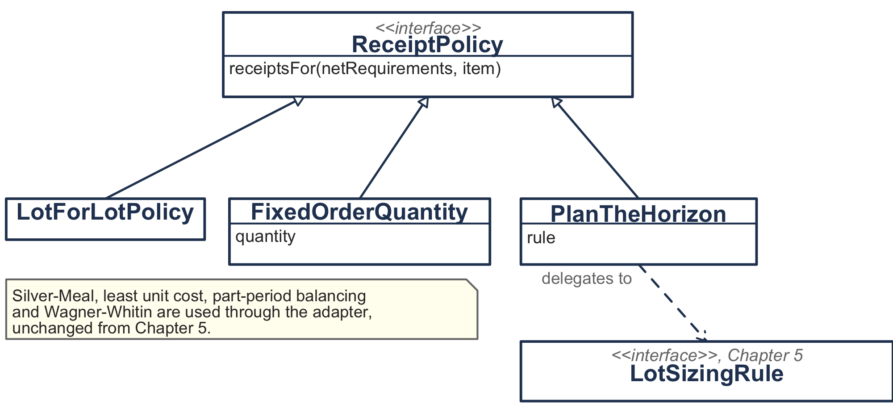
The fixed order quantity is the rule Section 5.2.2 had to exclude, and it is admissible here.
/**
* Order [quantity], or the period's net requirement when that is larger.
*
* Section 5.2.3 excluded this rule, because a quantity unrelated to the
* requirements cannot finish the horizon empty. Inside an MRP record it is
* admissible, and widely used, precisely because the record is not required to
* finish empty: what is left over is on hand at the start of the next planning
* cycle. That is what the projected-on-hand row is for.
*/
class FixedOrderQuantity(private val quantity: Double) : ReceiptPolicy6.10.5 Two Readings of “Net Requirement”
The record computes in two sweeps, and the reason matters, because this is the only place in the package where a name means two things.
The first sweep asks what would have to arrive in each period if nothing were carried beyond the opening stock and the scheduled receipts. That is the stream a policy is asked to cover, and it does not depend on the policy.
The second sweep works out what the policy’s receipts actually leave on hand, and recomputes the row the record prints. Those two are usually different. A fixed order quantity that covers three periods at once makes the printed net requirement zero in the two periods after it, and the stream it was given had positive numbers there.
val netRequirementsBeforeLotSizing: List<Double> // what the policy is given
val netRequirements: List<Double> // what the record showsThus, the two names. One property meaning whichever the caller happened to need would put the package into a quiet disagreement with every worked example in the literature, and nothing in the arithmetic would say where the disagreement came from.
6.10.6 A Network Is a Bill of Material
Section 6.6.1 claimed that distribution requirements planning is the same calculation. The design’s job is to make that claim structural and not rhetorical, and the way it does so is by not writing a second class.
BillOfMaterial(
locations,
regions.map { BillOfMaterial.Usage(parent = it, child = "CW", quantity = 1.0) },
)That is the whole of the network’s definition. RequirementsPlan then assigns low-level codes, which puts the regions at 0 and the centre at 1, plans them in that order, and computes the centre’s gross requirements as the sum over its parents. Figure 6.11 traces one item through that, and nothing in the trace would change if the graph were a network instead of a structure.
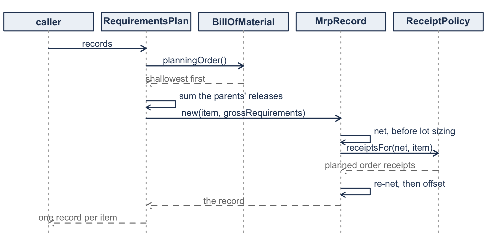
The temptation is a DistributionNetwork class with regions and centre on it, reading more naturally at the call site. It would duplicate the low-level coding, the planning order and the explosion, and it would then be possible for the two to disagree about a network that is also a structure, and that is a real thing: a warehouse supplying both dealers and an assembly plant.
Section 4.6.3 does have a DistributionNetwork, and it is not this one. It solves a different problem, the power-of-two reorder intervals of Section 4.6.2, and it holds no time-phased anything. Two classes with the same name in one book is a fair criticism; two classes for two problems is not.
6.10.7 Running the Chapter’s Examples
Every figure in this chapter comes from running this code. The structure of Figure 6.1 is a list of items and a list of usages, and nothing else.
val bom = BillOfMaterial(
listOf(
PlannedItem("DA", "Mower deck assembly", leadTime = 1, policy = LotForLotPolicy,
orderCost = 500.0, unitCost = 180.0, carryingCharge = 0.02),
PlannedItem("B", "Deck belt", leadTime = 2, policy = LotForLotPolicy,
orderCost = 300.0, unitCost = 50.0, carryingCharge = 0.02),
PlannedItem("S", "Spindle assembly", leadTime = 1, policy = LotForLotPolicy,
orderCost = 250.0, unitCost = 25.0, carryingCharge = 0.03),
PlannedItem("H", "Spindle housing", leadTime = 2, policy = LotForLotPolicy,
orderCost = 150.0, unitCost = 12.0, carryingCharge = 0.02),
PlannedItem("BR", "Bearing", leadTime = 3, policy = LotForLotPolicy,
orderCost = 100.0, unitCost = 4.0, carryingCharge = 0.02),
),
listOf(
BillOfMaterial.Usage("DA", "B", 1.0),
BillOfMaterial.Usage("DA", "S", 2.0),
BillOfMaterial.Usage("DA", "BR", 1.0),
BillOfMaterial.Usage("S", "H", 1.0),
BillOfMaterial.Usage("S", "BR", 2.0),
),
)
println(bom.lowLevelCodes.toSortedMap()) // {B=1, BR=2, DA=0, H=2, S=1}
println(bom.planningOrder()) // [DA, B, S, BR, H]Notice that no level was typed anywhere. lowLevelCodes is Section 6.2.1 and planningOrder is the order Section 6.4 plans in, and both are read off the usages, which is the argument of Section 6.10.2 made operational.
A master production schedule drives it. The five zeros in front are the lead-in of Section 6.3.3, and RequirementsPlan takes the schedule as a map because a structure may have more than one end item.
val schedule = List(5) { 0.0 } +
listOf(40.0, 60.0, 120.0, 300.0, 420.0, 260.0, 120.0, 40.0, 0.0, 80.0, 180.0, 220.0)
val plan = RequirementsPlan(bom, mapOf("DA" to schedule))
val bearing = plan.recordFor("BR")
println(bearing.grossRequirements.map { it.toInt() })
println(bearing.plannedOrderReleases.map { it.toInt() })
println("%d orders, %.0f setup, %.0f carrying"
.format(bearing.orderCount, bearing.setupCost, bearing.carryingCost))
println("%.0f past due".format(plan.pastDueReleases))[0, 0, 0, 160, 280, 540, 1320, 1980, 1460, 740, 280, 40, 320, 800, 1060, 220, 0]
[160, 280, 540, 1320, 1980, 1460, 740, 280, 40, 320, 800, 1060, 220, 0, 0, 0, 0]
13 orders, 1300 setup, 0 carrying
0 past dueThat first row is Table 6.6 and the second is the bearing’s release row in Figure 6.5. Notice pastDueReleases, which is how a horizon is checked without reading the record: it is zero here, and with four zeros in front instead of five it is 160, because the bearing’s first release would fall before period 1.
Changing a rule means changing one item’s policy, and PlanTheHorizon is what admits a rule of Section 5.5. Putting the deck assembly on Silver-Meal, with every component still on lot-for-lot, is one row of Table 6.7.
PlannedItem("DA", "Mower deck assembly", leadTime = 1,
policy = PlanTheHorizon(SilverMeal),
orderCost = 500.0, unitCost = 180.0, carryingCharge = 0.02)println("%.0f at the deck assembly, %.0f in total"
.format(plan.recordFor("DA").relevantCost, plan.relevantCost))
// 4936 at the deck assembly, 11636 in totalThat is against $14,500 with lot-for-lot everywhere, and Section 6.5.1 is that comparison run once per rule. Notice that relevantCost is available on the record and on the plan, which is what lets the experiment separate what the rule saved at the deck assembly from what it cost below.
The network of Section 6.6 uses the same two classes, with the regions as parents and every quantity per equal to one.
val demand = mapOf(
"N" to listOf(20.0, 30.0, 60.0, 140.0, 180.0, 110.0, 50.0, 20.0, 0.0, 40.0, 80.0, 100.0),
"S" to listOf(10.0, 20.0, 40.0, 100.0, 160.0, 100.0, 50.0, 10.0, 0.0, 20.0, 60.0, 70.0),
"W" to listOf(10.0, 10.0, 20.0, 60.0, 80.0, 50.0, 20.0, 10.0, 0.0, 20.0, 40.0, 50.0),
)
val regions = listOf("N" to 1, "S" to 2, "W" to 1)
val network = BillOfMaterial(
regions.map { (id, transit) ->
PlannedItem(id, "$id region", leadTime = transit, policy = LotForLotPolicy,
orderCost = 200.0, unitCost = 50.0, carryingCharge = 0.02)
} + PlannedItem("CW", "Central warehouse", leadTime = 2, policy = LotForLotPolicy,
orderCost = 400.0, unitCost = 50.0, carryingCharge = 0.02),
regions.map { (id, _) -> BillOfMaterial.Usage(parent = id, child = "CW", quantity = 1.0) },
)
val drp = RequirementsPlan(network, demand.mapValues { List(4) { 0.0 } + it.value })
println(network.lowLevelCodes.toSortedMap()) // {CW=1, N=0, S=0, W=0}
println(network.planningOrder()) // [N, S, W, CW]
println(drp.recordFor("CW").grossRequirements.map { it.toInt() })
// [0, 0, 10, 50, 80, 180, 360, 360, 210, 80, 30, 20, 120, 190, 150, 0]The last row is the centre’s gross requirement row in Figure 6.8. Notice the lead-in is four here and five above, because Section 6.6 has a shallower graph. Notice also what is absent: no class in this package is told that the graph is a network, and the only thing that says so is the word region in a label.
That is the whole of the interface. Section 6.11 collects what the chapter argued with it.
6.11 Summary
Most items in a manufacturing business have demand that is implied by the firm’s own plans. Calculating it from those plans beats forecasting it, and the calculation is a record per item: net what is needed against what is already there, lot size the result, and move it back by the lead time.
Two ideas make the calculation run over a whole structure. A low-level code says when an item may be planned, and that is after every parent of it. And a component’s gross requirements are its parents’ planned order releases times the quantity per, and that is Equation 6.1.
The horizon has to lead the first requirement by the cumulative lead time down the deepest path, or the plan reports orders it has no time to place.
Chapter 5’s rules run inside a record unchanged, and using them raises a question Chapter 5 could not ask. A parent’s rule decides what its components are asked for, so it decides their problem. The cost below a level rises with how often the level above orders, and the rule that is cheapest at a level is not the rule that is cheapest for the product. On the deck assembly that error costs 7.59%.
A distribution network is the same calculation with every quantity per equal to one, and it has the same result: batching at one stage amplifies what the next stage sees, by a factor of two to three here. That amplification costs nothing while demand is known. Thus, it belongs to Chapter 10 and not to this chapter.
Everything here assumes infinite capacity, fixed lead times, accurate records and known demand. The last of those is what the rest of the book removes.
Table 6.10 collects the notation, which Appendix A repeats alongside the rest of the book’s.
| Symbol | Meaning |
|---|---|
| \(G_t\) | gross requirement in period \(t\) |
| \(\mathit{SR}_t\) | scheduled receipt in period \(t\) |
| \(I_t\) | projected on hand at the end of period \(t\) |
| \(\mathit{NR}_t\) | net requirement in period \(t\) |
| \(\mathit{POR}_t\) | planned order receipt in period \(t\) |
| \(\mathit{Rel}_t\) | planned order release in period \(t\) |
| \(L\) | lead time, in periods |
| \(\mathit{SS}\) | safety stock |
| \(q_{ij}\) | units of \(j\) in one \(i\) |
6.12 Exercises
Unless an exercise says otherwise, use these conventions. Periods are numbered from one. Projected on hand is an end-of-period figure. A net requirement is never negative. A planned order release falls in the period the receipt is due less the lead time, and a release that would fall before period 1 is past due and is reported instead of placed. Report costs to the nearest cent and the variability coefficient to four decimal places.
6.12.1 Terminology and Concepts
Exercise 6.1 Define each of the following in one sentence, and say which section introduced it.
- dependent demand
- quantity per
- low-level code
- gross requirement
- net requirement
- planned order release
- past-due release
- cumulative lead time
- firm planned order
- safety lead time
Exercise 6.2 State whether each is true or false and give one sentence of justification.
- A component’s gross requirements are its parents’ planned order receipts times the quantity per.
- An item that appears at two levels of a bill of material is planned twice.
- Lot-for-lot at a parent leaves its components’ demand pattern unchanged.
- The variability coefficient of a component’s demand tells you what the component’s plan will cost.
- If every item uses the rule that is cheapest for it, the plan is the cheapest plan for the product.
- A past-due release means the inventory records are wrong.
- The bullwhip effect is caused by the network having several stages.
- Safety stock and safety lead time buffer against the same thing.
Exercise 6.3 Choose the best answer.
- Low-level codes exist so that (a) items can be sorted for printing; (b) an item is planned only after every parent has asked for it; (c) the bill of material can be drawn as a tree; (d) lead times can be added up.
- The \(\max\) in Equation 6.3 is there to (a) keep the arithmetic positive; (b) stop a surplus in one period being treated as a requirement in the next; (c) round the order quantity; (d) prevent division by zero.
- A planning horizon must lead the first requirement by at least (a) the longest single lead time; (b) the average lead time; (c) the cumulative lead time down the deepest path; (d) one period.
- The cost below a level rises with (a) the variability coefficient of the demand the components see; (b) how often the level above orders; (c) the number of levels;
- the quantity per.
- Distribution requirements planning differs from material requirements planning in that (a) it uses a different netting formula; (b) every quantity per is one and the parent is a customer; (c) it cannot use lot sizing; (d) it has no lead times.
6.12.2 Working the Records by Hand
Exercise 6.4 The deck belt has the twelve-month gross requirements of Table 5.1, a lead time of two months, 60 belts on hand, and a scheduled receipt of 200 belts due in month 3.
- Complete the record under lot-for-lot: net requirements, projected on hand, planned order receipts, and planned order releases.
- How many belts are past due, and why?
- Now use a fixed order quantity of 250, meaning that every receipt is 250 belts or the net requirement if that is larger. Complete the record again.
- Compare the two on orders placed and on unit-months carried. Which would you use, and what would you need to know to decide?
Exercise 6.5 A product P is assembled from two A, one B and one W. Each A contains one C and three W. Each B contains two C. Each W contains two C. Lead times are P one period, A two, B one, W two and C one.
- Draw the product structure and the indented list.
- Assign every item its low-level code.
- Give the order the items must be planned in.
- C appears at three different levels. Say what would go wrong if it were planned at the shallowest of them.
- Compute the cumulative lead time, and say how long a horizon must be to plan a twelve-period schedule for P.
Exercise 6.6 Using the structure of Exercise 6.5, suppose the master production schedule calls for 100 P in period 10 and 150 P in period 13, with nothing on hand or on order anywhere and lot-for-lot at every item.
- Complete the record for P and read off its planned order releases.
- Explode to A, B and W, and complete their records.
- Explode to C. Show the three contributions separately before summing them.
- In which period is the earliest order released, and for which item?
Exercise 6.7 Table 6.3 reports what happens to the deck assembly structure when the horizon is too short.
- Reproduce the 160 units that are past due when the schedule is given four empty months instead of five. Which item are they, and which path through the structure produced them?
- The bearing has a lead time of three months. If it were reduced to two, how many empty months would the horizon need?
- A planner proposes to solve past-due orders by starting the schedule later rather than by lengthening the horizon. Say what is wrong with that.
6.12.3 Modeling Problems
Exercise 6.8 Table 6.7 holds every component at lot-for-lot and varies only the deck assembly’s rule.
- Explain in your own words why the Cost below column rises with the Orders column.
- The periodic order quantity and lot-for-lot give identical results. Compute the deck assembly’s economic order quantity from Equation 3.17 and its time supply, and explain the coincidence.
- Wagner-Whitin is optimal at the deck assembly and third worst over the structure. State precisely what Section 5.4.2 does and does not guarantee.
- Propose a procedure that would find the rule minimizing total cost over the structure, and say why it is not what an MRP system does.
Exercise 6.9 Take the three regions of Example 6.3.
- Verify that the three regional demands sum to the 1,840 belts of Table 5.1.
- Reproduce the centre’s gross requirements in periods 3 through 8.
- The southern region’s transit time is two months and the others’ are one. Change the south to one month and recompute the centre’s gross requirements. Does the total change? Does the variability coefficient?
- Table 6.9 reports that every batching rule at the regions is cheaper than lot-for-lot, at the regions and at the centre both. Explain why, and then say what would have to be true about the world for the amplification to cost something.
Exercise 6.10 The bearing has a lead time of three months and a supplier who is occasionally a month late.
- Compare holding one month’s average requirement as safety stock against planning the bearing with a safety lead time of one month. Which protects against a late delivery, and which against a larger requirement than planned?
- Safety stock enters Equation 6.3 as an addition to the gross requirement. Write the corresponding modification for safety lead time and say which row it changes.
- A colleague proposes safety stock at every level of the structure. Say what that does to the total stock held, and why buffering at one level is usually preferred.
6.12.4 Using the Workbook
Exercise 6.11 Open Chapter6Models.xlsx.
- On the
Recordsheet, change the opening stock to 200 and describe what happens to each of the six rows. - On the
Explosionsheet, change the quantity per for spindle assemblies from 2 to- Report the new gross requirements for the bearing and explain the change.
- On the
Lumpinesssheet, type a plan of your own into the last row: any pattern that sums to 1,840 and covers the schedule. Can you find one with a lower variability coefficient than lot-for-lot’s 0.6191? Explain your answer. - On the
DRPsheet, give all three regions the same transit time. What happens to the centre’s variability coefficient, and what does that tell you about 1?
6.12.5 Using the Software
Exercise 6.12 The code of Section 6.10 is in code/, package inventory.requirementsplanning. Section 6.10.7 is the starting point: it builds the structure, plans it, and reads a record. Report the code you wrote alongside each answer.
- Build the structure of Figure 6.1 and print
lowLevelCodesandplanningOrder(). Now suppose the belt runs over an idler pulley that carries one of the same bearing, which isBillOfMaterial.Usage("B", "BR", 1.0). Add it and print both again, then print the bearing’s gross requirements before and after. Finally, vary the number of empty months in front of the master schedule and report the shortest lead-in that leavespastDueReleasesat zero. It is not the five of Section 6.3.3. Explain why it moved when no low-level code did. - Reproduce Table 6.7. Give the deck assembly
PlanTheHorizon(rule), leave every component onLotForLotPolicy, and loop over the seven rules, reportingorderCountandrelevantCostat the deck assembly, the same total over every other item, and the variability coefficient of the deck assembly’s receipts over the twelve scheduled months. Which rule makes the deck assembly’s receipts lumpiest, and is it the rule that costs the most? - Bearings are bought in boxes of 500. Implement a
ReceiptPolicywhose receipt in each period is the smallest multiple of the box size that covers what is still short, where what is still short is that period’s net requirement less anything left over from earlier receipts. Give it to the bearing, leave everything else on lot-for-lot, and report the bearing’s receipts,orderCount,setupCost,carryingCost, and the last entry ofprojectedOnHand. Is the plan cheaper? Which assumption of Section 5.1.2 does that last entry break, and why is breaking it admissible inside a record? - Section 6.5.1 holds every component on lot-for-lot. Put every component on
PlanTheHorizon(WagnerWhitin)instead and run the comparison of part (b) again. Report the table. Does the cost below the deck assembly still rise with the deck assembly’s order count? Does choosing the rule on the deck assembly alone still pick the wrong one, and what does the error cost now? - The distributor opens an eastern region whose transit time is three months and whose sales are those of the northern region, at the same costs as the other regions. Add it to the network of Section 6.6, report the centre’s gross requirements, and compare the variability coefficient of what the centre sees against the 0.6013 of
- Explain the direction it moved.
6.12.6 From the Literature
Exercise 6.13 Requirements planning was promoted in the 1970s as a replacement for order-point systems, and the claims made for it were larger than what it delivered.
- Using 2, give two assumptions whose failure would account for a disappointing implementation.
- Section 2.3 reports what inventory record accuracy actually is in practice. Explain why an order-point system tolerates a bad record better than a requirements planning system does.
- Find one account of an MRP implementation in the literature and report what its authors say went wrong. Classify their explanation against the five assumptions of